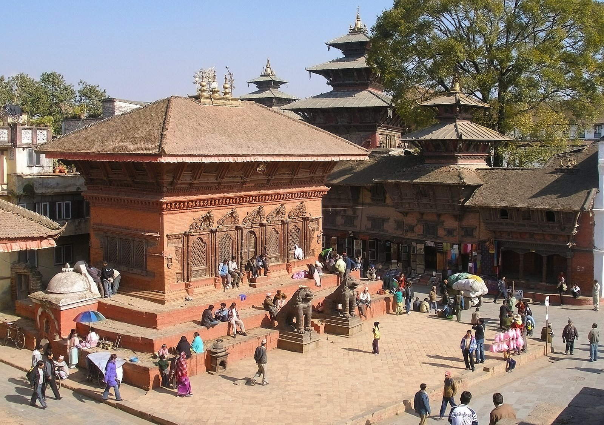
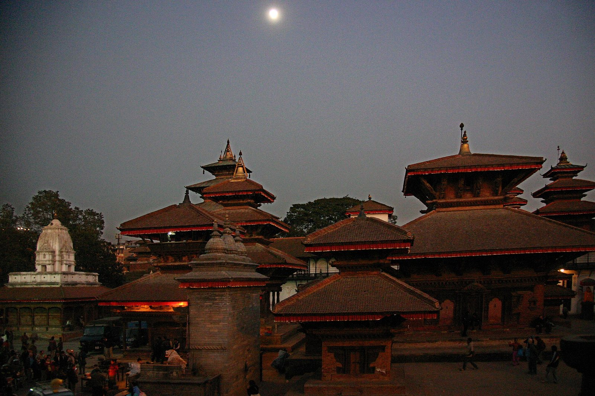

04/10 Katmandou · #j-2011-10-04
Durbar Square, à Katmandou : le temple de Shiva-Parvati (photo de 2007, avant le séisme de 2015).
même lieu ou même sentier Sur la place, à hauteur des marches du temple.
Durbar Square de Katmandou, le temple de Shiva-Parvati et les pagodes voisines, en décembre 2007.
« Le lieu regroupe beaucoup de temples et de belles maisons. » C1 p. 8
Placement proposé : Section du 4 octobre, après la traversée de Durbar Square.
Lieu exact. Photo de 2007 : la place est telle que Clément l'a vue en 2011, avant les destructions du séisme d'avril 2015.
Kathmandu Durbar Square, Shiva Parvati Temple, Nepal (edit).jpg, Vyacheslav Argenberg (retouche : UnpetitproleX), CC BY 4.0, via Wikimedia Commons (redimensionnée). 1600 × 1127 px.
Alternatives

Durbar Square, le soir.
Kathmandu-Durbar Square-02-abends-2007-gje.jpg, Gerd Eichmann, CC BY-SA 4.0, via Wikimedia Commons (redimensionnée ; cette version est diffusée sous la même licence).


.jpg){kind=link}


.jpg){kind=link}


.jpg){kind=link}

.jpg){kind=link}


-1.jpg){kind=link}


_(8448200379).jpg){kind=link}

_(8449549937).jpg){kind=link}


.jpg){kind=link}